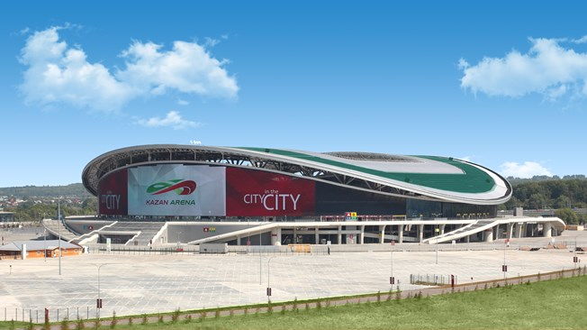
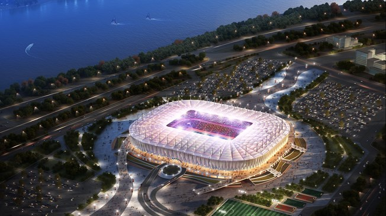

2018 FIFA World Cup Russia™
14 June - 15 July
Stadion Venue Yang Digunakan pada Piala Dunia 2018
|
Stadion Luzhniki
Stadion yang satu ini mungkin masih memberikan memori buruk bagi suporter Chelsea. Ya, di stadion inilah mimpi The Blues untuk menjadi juara Liga Champions pertama kalinya kandas di tangan Manchester United setelah sang kapten, John Terry terpeleset saat mengeksekusi penalti. Stadion Luzhniki yang menjadi venue final Liga Champions 2008 ini adalah stadion dengan kapasitas terbesar di Rusia. Terletak di Moskow, stadion yang satu ini mampu menampung hingga 80 ribu suporter. Bisa dikatakan, Luzhniki adalah Gelora Bung Karno-nya Rusia, karena tak ada klub yang menggunakannya sebagai stadion kandang, meskipun beberapa klub sempat menggunakannya sebagai kandang sementara. Luzhniki akan digunakan sebagai stadion untuk menghelat laga pembuka dan final. |
|
|
Ekaterinburg Arena
Stadion yang terletak di kota Yekaterinburg ini terkenal dengan tribunnya yang cukup unik. Sebelumnya, stadion yang menjadi markas klub FC Ural ini hanya mampu menampung sekitar 35 ribu kursi, namun karena peraturan FIFA yang mengharuskan stadion untuk Piala Dunia harus mampu menampung minimal 40.000 penonton, dibangunlah tribun tambahan sementara yang berada di luar stadion! Menurut situs resmi FIFA, renovasi di Ekaterinburg sudah mencapai 98 persen saat ini, dan penyelesaian akhir tinggal dilakukan untuk menyempurnakan stadion unik yang satu ini. |
|
|  |
Kazan Arena
Tribes pasti sudah bisa menebak stadion yang satu ini markas dari klub apa. Ya, benar, Kazan Arena adalah stadion yang menjadi markas dari salah satu klub besar Rusia, Rubin Kazan. Terletak di kota Kazan, Kazan Arena mampu menampung total 45.379 penonton. Keunikan yang dimiliki stadion yang satu ini adalah layar besar yang ada di stadion, yang merupakan layar terbesar yang ada di stadion-stadion di Eropa. Selain itu, Kazan Arena terkenal megah karena didesain oleh arsitek yang menangani stadion Wembley dan Emirates yang populer di Inggris. |

|
Stadion Spartak
Satu lagi stadion yang berada di Moskow. Stadion Spartak adalah kandang resmi dari klub Spartak Moskow. Stadion yang juga dikenal dengan nama Otkrytiye Arena ini mampu menampung sampai 45.360 penonton. Stadion Spartak terkenal akan atmosfernya yang intens, yang terdukung berkat keberadaan patung Spartacus, sosok gladiator Romawi yang berada di luar stadion. Sebelumnya, stadion ini juga sempat menjadi arena konser beberapa band ternama, seperti Incubus dan Triggerfinger. |

|
Stadion Fisht
Stadion berkapasitas 47.659 orang ini terletak di kota Sochi, yang sebelumnya menjadi tuan rumah dari Olimpiade Musim Dingin 2014. Penamaan Fisht dinamai dari Pegunungan Fisht yang terletak di daerah Sochi. Meskipun terhitung cukup besar, tak ada klub yang menjadikan stadion ini sebagai markas untuk pertandingan kandang. Sebelumnya, Stadion Fisht memiliki atap tertutup, namun demi memenuhi regulasi dari FIFA, atap tersebut kemudian dilepas. |

|
Stadion Kaliningrad
Stadion ini adalah stadion yang terletak di bagian paling utara Rusia untuk Piala Dunia 2018. Stadion yang juga dikenal sebagai Arena Baltika ini terletak di Pulau Oktyabrskaya, Kaliningrad. Menjadi markas dari klub FC Baltika Kaliningrad, disinyalir desain stadion yang satu ini terinspirasi dari markas Bayern München, Allianz Arena. Berkapasitas sekitar 35.512 penonton, menurut situs resmi FIFA, renovasi Stadion Kaliningrad tengah berjalan dan sudah mencapai 90 persen. |

|
Stadion Saint Petersburg
Stadion yang menjadi kandang klub raksasa, Zenit St Petersburg ini, memiliki kapasitas kedua terbanyak setelah Luzhniki. Mampu menampung sekitar 64.287 penonton, Stadion Saint Petersburg adalah salah satu yang termegah di Rusia. Stadion yang satu ini juga dikenal dengan nama Stadion Krestovsky, karena letaknya yang berada di Pulau Krestovsky, Saint Petersburg. Kemegahan stadion yang satu ini juga ditambah oleh atapnya yang bisa dibuka-tutup. |
|  |
Rostov Arena
Stadion yang terletak di kota Rostov-on-Don ini menjadi kandang dari klub FC Rostov. Rostov Arena saat ini tengah menjalani renovasi untuk penambahan kapasitas, yang ditarget akan mencapai 45.145 penonton. Selain penambahan kapasitas, kabarnya renovasi mencakupi pemasangan eskalator dan lift. Menariknya, setelah perhelatan Piala Dunia usai, kapasitas akan kembali berkurang hingga hanya 5 ribu penonton! |